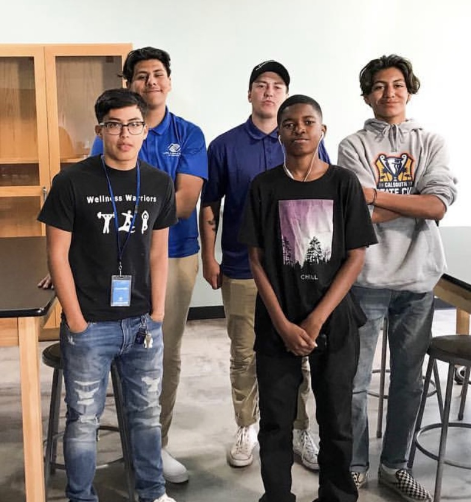
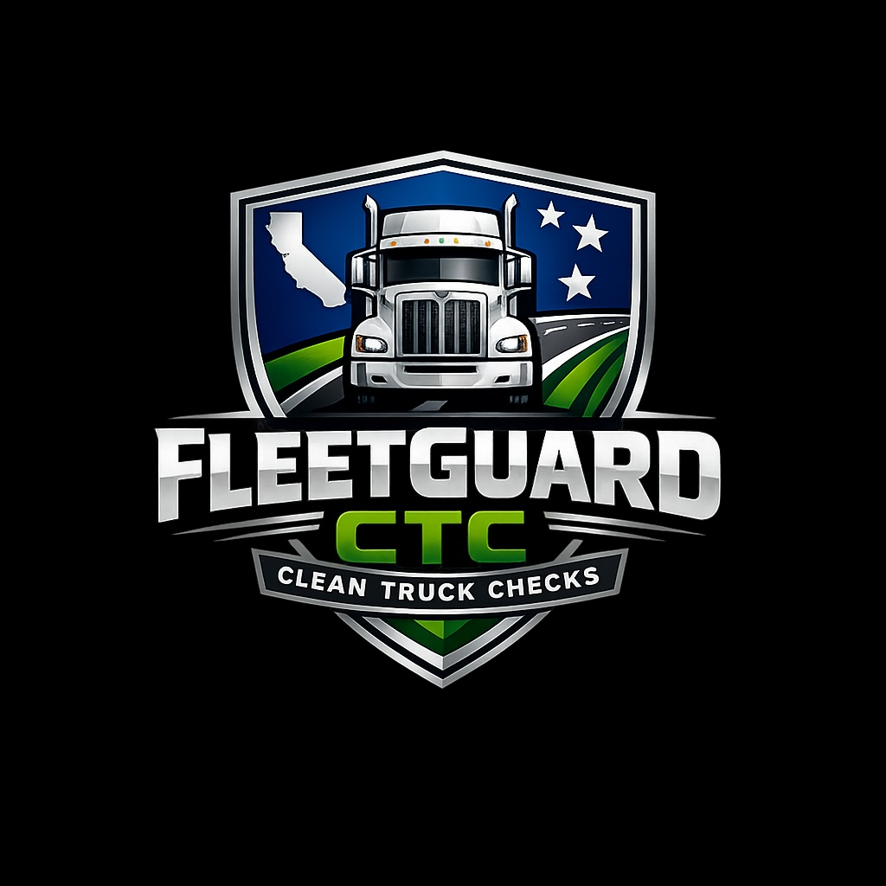
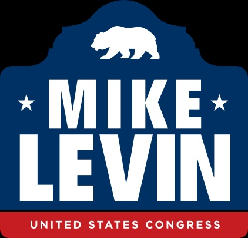

Hello! My name is Christian Diaz, and I am currently an Undeclared student with an interest in Political Science at the University of California, Riverside. My academic interests include Public Policy, Law & Society, and International Affairs. I initially entered UCR with an interest in Pre-Business, however, I have since shifted my focus to prepare for a future law program. I have been fortunate enough to start several businesses that have thrived over the years, which has allowed me to engage more deeply with the political sphere around us. I am motivated by contemporary issues on race, immigration, and corruption in mainstream politics.
My long-term goals include attending law school, working closely with local congressmen or congresswomen, practicing immigration law, and growing my business portfolio. I currently own five businesses across multiple sectors and plan to acquire more. Another major goal of mine is to start and fund a local charitable foundation that works directly with underprivileged youth who have demonstrated an interest in entrepreneurship, supporting them both financially and educationally during the early stages of their endeavors.
Outside of academics, I enjoy: Watch collecting and trading. Reading physics, space, and political science academic journals. Snorkeling, surfing, swimming, or anything water related. Working with local food banks to distribute food to those in need. Playing soccer, basketball, tennis or watching football (Jets). Volunteering at the local courthouse or Boys and Girls Club. Spending time with family and friends. Being a senior member of the Inland Empire Real Estate Investment Club.
• Orchestrated smooth and efficient program development by collaborating cross-functionally across departments.
• Provided ongoing direction and leadership for program operations.
• Maintained regular communication between departments via email and phone calls to coordinate possible program opportunities.
• Operate a California Clean Truck Check Smog Shop.
• Handle hundreds of smog transactions a month.
• Wholesale, Wholetale, and Purchase of properies across the US.
• Handle over 5 closings a month.
• Fix and Flip properties all throughout the US.
• Own a rental portfolio with over 10 units.


